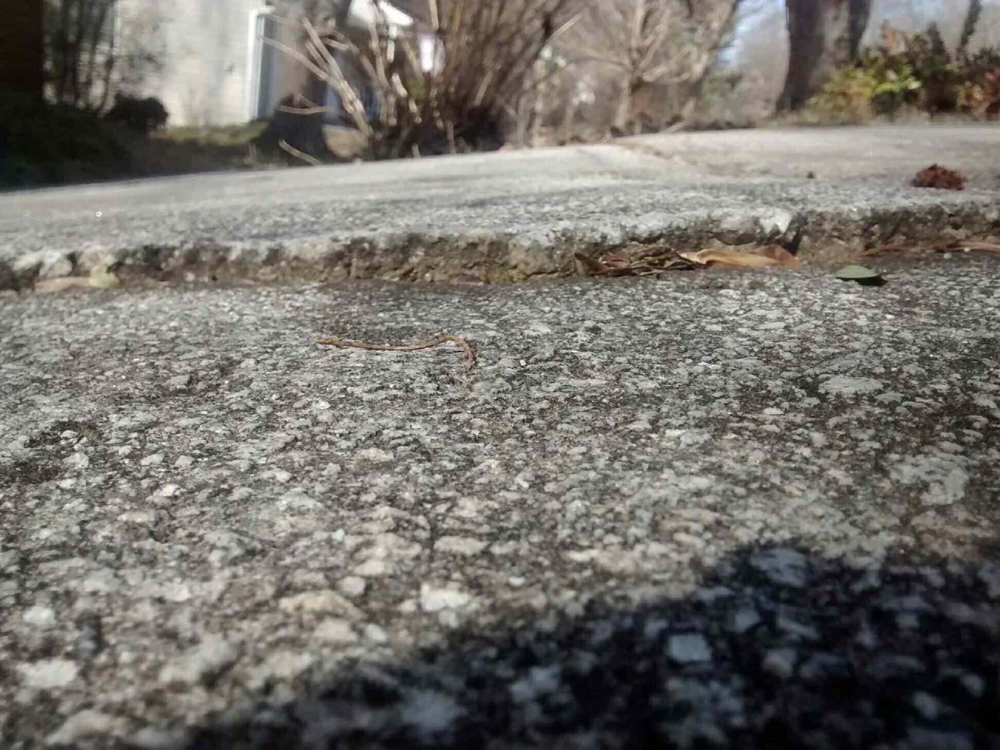
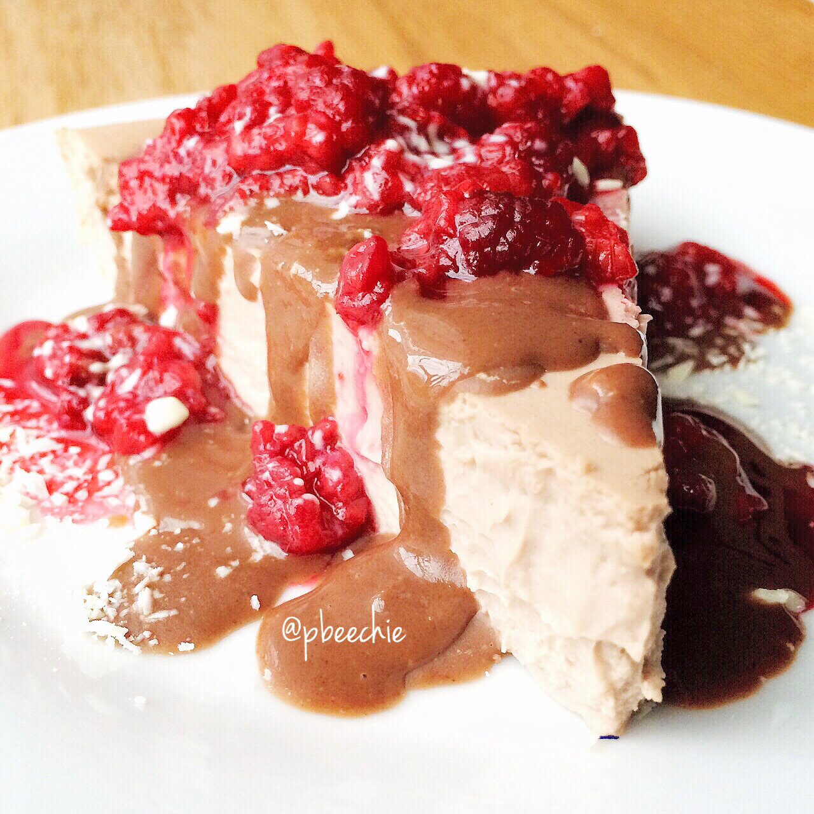

Chocolate Raspberry Truffle Protein Cheesecake


Wooooo baby. Been a while since I made protein cheesecake!! This week's desire: chocolate raspberry truffle protein cheesecake topped with warmed raspberries, sugar free white chocolate, and 1 tbsp chocolate coconut butter, give or take a tablespoon XD. Whoops? Anyways
.I had this Monday and was so hungry after baking in the kitchen all day!! It was Presidents' Day so of course I made the most of my day off and prepared sooo many baked goodies for friends & coworkers this week. Lots of awesome recipes I'll probably also bring to the Arnold Expo this year for fwends. :)<3 Did I tell you I convinced Jesse to come with me to the expo? Of course I wanted to go, but after breaking my foot I wasn't too sure that hobbling around the CROWDED expo in crutches was a good idea... Plus the airport would suck. But Jesse and I decided we will drive up and he can help keep me calm. I get stressed in public situations because navigating is hard enough (people kick my crutches from under me, I've had people kick my foot..... Or they just cut me off), but it'll be okay with him there. SO yeah. Anyone else going?!? So excited because last year was so fun meeting so many friends.
I went back to observe the "death crack" that I twisted my ankle and broke my foot on. And it's embarrassing. Like. It's so much smaller than I thought it had been XD Behold.
See how lame?! My gynecologist thinks that maybe the easy breakage (I never even FELL, it just snapped) paired with my amenorrhea (it's been 3.5 years if you don't count last Spring when I went through 3 rounds of medicine to induce it once...) and joint pain may be an indication that my low estrogen is causing my bone density to be compromised. It makes sense, really. Especially since my mom has osteopenia. SO I'm going to get a Dexa Scan soon to see what happens.
Chocolate Raspberry Truffle Protein Cheesecake
Makes: 8 slices
-
2 whole eggs
-
2 egg whites
-
two 8 oz containers of fat free cream cheese (16 oz total)
-
1.5 cups plain Greek yogurt (12 oz total)
-
1.5 cups baking stevia
-
2 scoops chocolate raspberry protein powder (cellucor brand)
Mix all of your ingredients!! Blend it all to get out any lumps - I use a food processor to mix it. Just make sure you use a low speed. I tried using a hand blender before but it created too many air bubbles and the cheesecake came out with a weird texture. Bake in a pie dish at 300 F for 60 mins. Remove and let cool to room temp. Once cool, cover and refrigerate overnight. Slice into 8 pieces n den eeeeat.
1 slice: 135 calories; 2 g fat, 9 g carbs, and 21 g protein